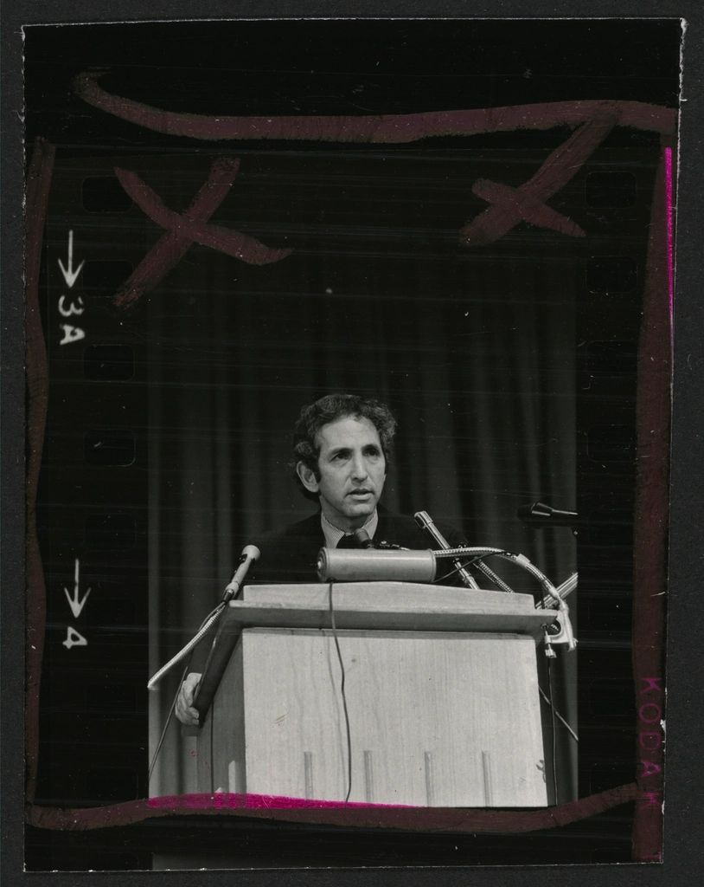

10月の農産業輸出が過去最高を記録：57億1700万ドルLas exportaciones agroindustriales de octubre marcaron un récord: US$5717 millones海外販売は金額と数量の両方で前年比23％増加した。年初からの10カ月間で1億682万トンが輸出された。
10月の農産業輸出が過去最高を記録：57億1700万ドルLas exportaciones agroindustriales de octubre marcaron un récord: US$5717 millones海外販売は金額と数量の両方で前年比23％増加した。年初からの10カ月間で1億682万トンが輸出された。 フォード、中国への注力を強化し、レンジャーより手頃なピックアップトラックを準備Ford refuerza su apuesta por China y prepara una pickup más accesible que la Ranger同社は米国外での競争のため、中国のパートナーへの依存を続けている。ヘネラル・パチェコ工場への影響はどうなるのか。
フォード、中国への注力を強化し、レンジャーより手頃なピックアップトラックを準備Ford refuerza su apuesta por China y prepara una pickup más accesible que la Ranger同社は米国外での競争のため、中国のパートナーへの依存を続けている。ヘネラル・パチェコ工場への影響はどうなるのか。 フランコ・コラピント、カタールGPの最初の練習走行を終えて15位で落胆：「良い一日ではなかった」Franco Colapinto, 15º y decepcionado tras los primeras ensayos del Gran Premio de Qatar: “No fue un buen día”チャンピオンのキミ・アントネッリがルサイルで最速となった。アルゼンチン人ドライバーは第2セッションで周回も少なく、ペースも遅かった。
フランコ・コラピント、カタールGPの最初の練習走行を終えて15位で落胆：「良い一日ではなかった」Franco Colapinto, 15º y decepcionado tras los primeras ensayos del Gran Premio de Qatar: “No fue un buen día”チャンピオンのキミ・アントネッリがルサイルで最速となった。アルゼンチン人ドライバーは第2セッションで周回も少なく、ペースも遅かった。 政治、人物、出来事：Netflixシリーズ『ゴードン』でフィクションなのは何か、現実なのは何かPolítica, personajes y hechos: qué hay de ficción y qué de realidad en Gordon, la serie de Netflixこの作品は、暴力に彩られた時代へのアプローチを通じ、アルゼンチンの1960年代と70年代についての公共の議論に新たな場を開いた。
政治、人物、出来事：Netflixシリーズ『ゴードン』でフィクションなのは何か、現実なのは何かPolítica, personajes y hechos: qué hay de ficción y qué de realidad en Gordon, la serie de Netflixこの作品は、暴力に彩られた時代へのアプローチを通じ、アルゼンチンの1960年代と70年代についての公共の議論に新たな場を開いた。 ダニエル・ママン：芸術作品の売買と作品に囲まれて生きることに専念した画商の半世紀の逸話Daniel Maman: medio siglo de anécdotas de un galerista dedicado a comprar, vender y vivir entre obras de arte2001年のさなかに妻パトリシア・パシーノと開いたスペースの25周年と、画商としての50年を、所蔵するコレクションの展示で祝う。
ダニエル・ママン：芸術作品の売買と作品に囲まれて生きることに専念した画商の半世紀の逸話Daniel Maman: medio siglo de anécdotas de un galerista dedicado a comprar, vender y vivir entre obras de arte2001年のさなかに妻パトリシア・パシーノと開いたスペースの25周年と、画商としての50年を、所蔵するコレクションの展示で祝う。 ヒルド・インスフラン、フォルモサでの9期目出馬を阻止しようとする野党の申し立てを最高裁で退けるGildo Insfrán rechazó ante la Corte Suprema el planteo de la oposición para impedir que compita por un noveno mandato en Formosaペロニスタの知事は、訴訟を提起した指導者らには提訴資格がないと述べた。最高裁は彼らに通知した上で、その後判断を下す。
ヒルド・インスフラン、フォルモサでの9期目出馬を阻止しようとする野党の申し立てを最高裁で退けるGildo Insfrán rechazó ante la Corte Suprema el planteo de la oposición para impedir que compita por un noveno mandato en Formosaペロニスタの知事は、訴訟を提起した指導者らには提訴資格がないと述べた。最高裁は彼らに通知した上で、その後判断を下す。 コレステロール：数値をコントロールするために何を食べるべきかColesterol: qué comer para mantener los niveles bajo controlこの病気の高値を抑えるための戦略の一つとして、特定の栄養素の摂取が挙げられる。ホルヘ・タルタグリオーネ氏が、その方法のいくつかを詳しく説明した
コレステロール：数値をコントロールするために何を食べるべきかColesterol: qué comer para mantener los niveles bajo controlこの病気の高値を抑えるための戦略の一つとして、特定の栄養素の摂取が挙げられる。ホルヘ・タルタグリオーネ氏が、その方法のいくつかを詳しく説明した ダニエル・メッカ：「ボルヘスはアルゼンチン文学の偉大なポップの野獣だ」Daniel Mecca: “Borges es la gran bestia pop de la literatura argentina”ボルヘス・パルーサ・フェスティバルの創設者が、マリア・コダマ氏がローリング・ストーンズのリーダーについて語った驚くべき逸話を振り返る。両者の類似点を探る
ダニエル・メッカ：「ボルヘスはアルゼンチン文学の偉大なポップの野獣だ」Daniel Mecca: “Borges es la gran bestia pop de la literatura argentina”ボルヘス・パルーサ・フェスティバルの創設者が、マリア・コダマ氏がローリング・ストーンズのリーダーについて語った驚くべき逸話を振り返る。両者の類似点を探る 10月も民間のドル需要は高止まり、海外への送金は増加Siguió elevada en octubre la demanda privada de dólares y crecieron los envíos al exteriorそうした買い付けの影響は、為替経常勘定の堅調な収支のおかげで目立たなかった。
10月も民間のドル需要は高止まり、海外への送金は増加Siguió elevada en octubre la demanda privada de dólares y crecieron los envíos al exteriorそうした買い付けの影響は、為替経常勘定の堅調な収支のおかげで目立たなかった。 民営化を前に、ヌクレオエレクトリカが原子力サービスの輸出に向けて前進Antes de su privatización, Nucleoeléctrica avanza para exportar servicios nuclearesカナダのカンドゥ・エナジーと枠組み協定を結んだ。同社は原子力発電所向けの技術を保有している。アルゼンチンの技術者らは、寿命延長に取り組む…
民営化を前に、ヌクレオエレクトリカが原子力サービスの輸出に向けて前進Antes de su privatización, Nucleoeléctrica avanza para exportar servicios nuclearesカナダのカンドゥ・エナジーと枠組み協定を結んだ。同社は原子力発電所向けの技術を保有している。アルゼンチンの技術者らは、寿命延長に取り組む… 生後1か月の女児が埋められた状態で見つかる、10代の母親が病院から逃げ出してから2日後Encontraron a una beba de un mes enterrada, dos días después de que su madre adolescente se escapase de un hospital発達の遅れがあるその少女は、マル・デル・プラタで母親と、同じく未成年で妊娠中の妹と一緒に見つかった。
生後1か月の女児が埋められた状態で見つかる、10代の母親が病院から逃げ出してから2日後Encontraron a una beba de un mes enterrada, dos días después de que su madre adolescente se escapase de un hospital発達の遅れがあるその少女は、マル・デル・プラタで母親と、同じく未成年で妊娠中の妹と一緒に見つかった。 アルゼンチン産レモン、すでに3つの記録を達成し、中東戦争による意外な余波もEl limón argentino ya registra tres récords y un inesperado coletazo por la guerra en Medio Oriente10月までに、生産、搾汁、工業用派生品の輸出が目立った。一方、生鮮果実の海外販売は…
アルゼンチン産レモン、すでに3つの記録を達成し、中東戦争による意外な余波もEl limón argentino ya registra tres récords y un inesperado coletazo por la guerra en Medio Oriente10月までに、生産、搾汁、工業用派生品の輸出が目立った。一方、生鮮果実の海外販売は… ペドロ・サンチェス氏、マドリードで選挙運動を締めくくり、ミレイ氏への新たな批判で逆転の物語を後押しPedro Sánchez cerró su campaña en Madrid con nuevas críticas a Milei y buscó alimentar el relato de una remontada社会主義者の大統領はマドリードでの集会で最後の切り札を使い、「はさみ」と「チェーンソー」に反対する投票を呼びかけた。これは2人のライバルへの言及である。
ペドロ・サンチェス氏、マドリードで選挙運動を締めくくり、ミレイ氏への新たな批判で逆転の物語を後押しPedro Sánchez cerró su campaña en Madrid con nuevas críticas a Milei y buscó alimentar el relato de una remontada社会主義者の大統領はマドリードでの集会で最後の切り札を使い、「はさみ」と「チェーンソー」に反対する投票を呼びかけた。これは2人のライバルへの言及である。 石油価格が下落、供給過剰への期待は続くEl precio del petróleo cae y se mantiene la expectativa por exceso de oferta原油は供給過剰への期待から下落した。中東の緊張にもかかわらず、主要産油国の会合を前にした動きだ。国際エネルギー機関は…
石油価格が下落、供給過剰への期待は続くEl precio del petróleo cae y se mantiene la expectativa por exceso de oferta原油は供給過剰への期待から下落した。中東の緊張にもかかわらず、主要産油国の会合を前にした動きだ。国際エネルギー機関は… ハビエル・ミレイ氏とその施策をライブで：政府は2027年度予算とPASO停止について一院での承認を獲得Javier Milei y sus medidas, en vivo: el Gobierno logró la media sanción del Presupuesto 2027 y la suspensión de las PASO大統領の決定、野党の反応、政府関係者の発言を分刻みでお伝えする。
ハビエル・ミレイ氏とその施策をライブで：政府は2027年度予算とPASO停止について一院での承認を獲得Javier Milei y sus medidas, en vivo: el Gobierno logró la media sanción del Presupuesto 2027 y la suspensión de las PASO大統領の決定、野党の反応、政府関係者の発言を分刻みでお伝えする。 ザ・キラーズのギタリストが脳卒中を発症：「生存確率は40％だった」El guitarrista de The Killers sufrió un derrame cerebral: “Tenía un 40 por ciento de probabilidades de sobrevivir”デイヴ・キーニング氏はSNSへの投稿で、2週間前に発症した重度の脳卒中について語り、後遺症が残らなかったことを喜んでいる。
ザ・キラーズのギタリストが脳卒中を発症：「生存確率は40％だった」El guitarrista de The Killers sufrió un derrame cerebral: “Tenía un 40 por ciento de probabilidades de sobrevivir”デイヴ・キーニング氏はSNSへの投稿で、2週間前に発症した重度の脳卒中について語り、後遺症が残らなかったことを喜んでいる。 ドル相場とブルードル、ライブ：公式ドルはいくらか、並行ドルはいくらか、11月27日金曜日Dólar hoy y dólar blue, EN VIVO: a cuánto cotiza el oficial y cuál es el precio del paralelo este viernes 27 de noviembre公式通貨は売値1,625ドルで取引され、一方、非公式ドルは同じ取引で1,710ドルで取引されている。
ドル相場とブルードル、ライブ：公式ドルはいくらか、並行ドルはいくらか、11月27日金曜日Dólar hoy y dólar blue, EN VIVO: a cuánto cotiza el oficial y cuál es el precio del paralelo este viernes 27 de noviembre公式通貨は売値1,625ドルで取引され、一方、非公式ドルは同じ取引で1,710ドルで取引されている。 ピラールの住宅：何件あり、15万米ドルまでと20万米ドルまでで何件掲載されているかCasas en Pilar: cuántas hay y cuántas se publican por hasta US$ 150.000 y US$ 200.000メルカド・リブレは11月20日時点で同地区に8,500件の広告を掲載していた。北郊外で販売中のその種の住宅の4件に1件にあたる。7件に1件は…
ピラールの住宅：何件あり、15万米ドルまでと20万米ドルまでで何件掲載されているかCasas en Pilar: cuántas hay y cuántas se publican por hasta US$ 150.000 y US$ 200.000メルカド・リブレは11月20日時点で同地区に8,500件の広告を掲載していた。北郊外で販売中のその種の住宅の4件に1件にあたる。7件に1件は… 写真で見る：ガレリア・ママン・ファイン・アート25周年記念の招待客全員En fotos. Todos los invitados al 25° aniversario de Galería Maman Fine Art記念にあたり、同ギャラリーはアルゼンチンの著名アーティスト25人による展覧会「セレブラシオン」を開幕した。
写真で見る：ガレリア・ママン・ファイン・アート25周年記念の招待客全員En fotos. Todos los invitados al 25° aniversario de Galería Maman Fine Art記念にあたり、同ギャラリーはアルゼンチンの著名アーティスト25人による展覧会「セレブラシオン」を開幕した。 中古ハイブリッド車と電気自動車：何台掲載され、どのような車で、いくらかHíbridos y eléctricos usados: cuántos se publican, cuáles son y cuánto cuestanメルカド・リブレは11月20日時点で電動化中古車の広告1,656件を掲載しており、10台中4台がトヨタだった。登録では、5,388台が所有者を変更した…
中古ハイブリッド車と電気自動車：何台掲載され、どのような車で、いくらかHíbridos y eléctricos usados: cuántos se publican, cuáles son y cuánto cuestanメルカド・リブレは11月20日時点で電動化中古車の広告1,656件を掲載しており、10台中4台がトヨタだった。登録では、5,388台が所有者を変更した…
ラプラタのバンド、アガポルニスがボーカリストを失う：「驚いた」La banda platense Agapornis se quedó sin cantante: “Nos sorprendió”クンビア・ポップのグループは、公演が確定しているスケジュールの中、ソーシャルメディアでボーカリストの脱退を発表した。数時間後、ダナ・カブレラ氏がその理由を説明した 年末までに、政府は重要ポストへのさらなる司法任命案を進めるAntes de que termine el año, el Gobierno avanza con más pliegos judiciales para cargos clave選挙管轄権を持つコリエンテス州とサンフアン州の判事2人が、上院で自らの候補者指名を擁護した。政府の対応を待つ州は他に9州ある
年末までに、政府は重要ポストへのさらなる司法任命案を進めるAntes de que termine el año, el Gobierno avanza con más pliegos judiciales para cargos clave選挙管轄権を持つコリエンテス州とサンフアン州の判事2人が、上院で自らの候補者指名を擁護した。政府の対応を待つ州は他に9州ある 新たな決勝を前に、エストゥディアンテス・デ・ラ・プラタはリベルタドーレス杯を何回制しているのかCuántas copas Libertadores tiene Estudiantes de La Plata, en la previa de una nueva finalこの土曜日、ピンチャは南米クラブレベルで最も重要な大会で6度目の決勝に臨む。勝てば、歴代3番目の最多優勝チームとなる…
新たな決勝を前に、エストゥディアンテス・デ・ラ・プラタはリベルタドーレス杯を何回制しているのかCuántas copas Libertadores tiene Estudiantes de La Plata, en la previa de una nueva finalこの土曜日、ピンチャは南米クラブレベルで最も重要な大会で6度目の決勝に臨む。勝てば、歴代3番目の最多優勝チームとなる… 米国で嵐が続き、2000便以上に影響、46万人が停電Tormentas persisten en EE.UU. con más de 2.000 vuelos afectados y 460.000 clientes sin luz感謝祭の後、米国を嵐と雪が襲い、航空便に影響が出て数千人が停電している。北東部は吹雪と雨に見舞われている。太平洋岸では…
米国で嵐が続き、2000便以上に影響、46万人が停電Tormentas persisten en EE.UU. con más de 2.000 vuelos afectados y 460.000 clientes sin luz感謝祭の後、米国を嵐と雪が襲い、航空便に影響が出て数千人が停電している。北東部は吹雪と雨に見舞われている。太平洋岸では… ファクンド・アラーナ、マリア・スシーニとの別れ後に著名デザイナーとの関係を報じられる：彼女について何と語ったかFacundo Arana, vinculado con una reconocida diseñadora tras su separación de María Susini: qué dijo sobre ellaマリアン・サウドとの交際の可能性をめぐる報道の中、俳優は噂の発端となった女性について語り、二人のつながりがどのように生まれたかを説明した
ファクンド・アラーナ、マリア・スシーニとの別れ後に著名デザイナーとの関係を報じられる：彼女について何と語ったかFacundo Arana, vinculado con una reconocida diseñadora tras su separación de María Susini: qué dijo sobre ellaマリアン・サウドとの交際の可能性をめぐる報道の中、俳優は噂の発端となった女性について語り、二人のつながりがどのように生まれたかを説明した リオ・ガジェゴスの連邦判事、ラサロ・バエスの2つのエスタンシアの管理をサンタクルス州政府に移管El juez federal de Río Gallegos le entregó la administración de dos estancias de Lázaro Báez al gobierno de Santa Cruzクラウディオ・バスケス判事は、アルキンタとラ・エントレリアーナの両エスタンシアの資産と家畜を保護するため、州による共同管理体制を設けた。
リオ・ガジェゴスの連邦判事、ラサロ・バエスの2つのエスタンシアの管理をサンタクルス州政府に移管El juez federal de Río Gallegos le entregó la administración de dos estancias de Lázaro Báez al gobierno de Santa Cruzクラウディオ・バスケス判事は、アルキンタとラ・エントレリアーナの両エスタンシアの資産と家畜を保護するため、州による共同管理体制を設けた。 ポストチャビスモと後期ペロニスモPoschavismo y tardoperonismoチャビスモを「ペロン化」するという提案は、ベネズエラの移行を管理するための、ワシントンの「タカ派」による意外な類推である。
ポストチャビスモと後期ペロニスモPoschavismo y tardoperonismoチャビスモを「ペロン化」するという提案は、ベネズエラの移行を管理するための、ワシントンの「タカ派」による意外な類推である。 ホルヘ・ボルン氏死去――名字、帝国、そして国内実業家時代の終わりMurió Jorge Born: un apellido, un imperio y el final de una época del empresariado nacional国内最大級の工業グループのひとつを受け継ぎ、モントネロスによる誘拐を生き延び、メネミスモの経済路線に影響を与え、目撃者でもあった。スペインでコロンビアの元知事を逮捕、性的虐待容疑で指名手配され、3か月後にカナリア諸島で発見Detuvieron en España a un exgobernador de Colombia: lo buscaban por abuso sexual y lo encontraron tres meses después en Canariasカルロス・カイセド氏はマグダレナ県の元知事で、2018年の選挙で左派の候補者となるべくグスタボ・ペトロ氏と競った。9月以来…
ホルヘ・ボルン氏死去――名字、帝国、そして国内実業家時代の終わりMurió Jorge Born: un apellido, un imperio y el final de una época del empresariado nacional国内最大級の工業グループのひとつを受け継ぎ、モントネロスによる誘拐を生き延び、メネミスモの経済路線に影響を与え、目撃者でもあった。スペインでコロンビアの元知事を逮捕、性的虐待容疑で指名手配され、3か月後にカナリア諸島で発見Detuvieron en España a un exgobernador de Colombia: lo buscaban por abuso sexual y lo encontraron tres meses después en Canariasカルロス・カイセド氏はマグダレナ県の元知事で、2018年の選挙で左派の候補者となるべくグスタボ・ペトロ氏と競った。9月以来… ロレアル、地域事業をブエノスアイレスに集約し、ウルグアイから45のポストの移転を目指すL'Oréal centralizará su operación regional en Buenos Aires y busca trasladar 45 puestos desde Uruguayフランスの同社はまもなく、人事、マーケティング、財務などの企業部門を同国に集約する。対象となる従業員数が何人になるかはまだ決まっていない。
ロレアル、地域事業をブエノスアイレスに集約し、ウルグアイから45のポストの移転を目指すL'Oréal centralizará su operación regional en Buenos Aires y busca trasladar 45 puestos desde Uruguayフランスの同社はまもなく、人事、マーケティング、財務などの企業部門を同国に集約する。対象となる従業員数が何人になるかはまだ決まっていない。 アビナデル氏、米国議会に初めて進出したドミニカ人アドリアノ・エスパイヤット氏を表彰Abinader condecora a Adriano Espaillat, primer dominicano que llegó al Congreso de EE.UU.ドミニカの指導者は、ニューヨーク選出の下院議員にメリット勲章を授与し、ヒスパニック・コミュニティにおける同氏の影響力を称えた。エスパイヤット氏はこの栄誉を捧げた
アビナデル氏、米国議会に初めて進出したドミニカ人アドリアノ・エスパイヤット氏を表彰Abinader condecora a Adriano Espaillat, primer dominicano que llegó al Congreso de EE.UU.ドミニカの指導者は、ニューヨーク選出の下院議員にメリット勲章を授与し、ヒスパニック・コミュニティにおける同氏の影響力を称えた。エスパイヤット氏はこの栄誉を捧げた デルタ大学、サン・フェルナンドに新キャンパスを開設へLa Universidad del Delta tendrá una nueva sede en San Fernando建物の面積は6,000平方メートルを超える。同大学は地域のニーズに応じた専門人材の育成に取り組んでいる
デルタ大学、サン・フェルナンドに新キャンパスを開設へLa Universidad del Delta tendrá una nueva sede en San Fernando建物の面積は6,000平方メートルを超える。同大学は地域のニーズに応じた専門人材の育成に取り組んでいる カタールU-17ワールドカップ：32強の対戦カードが決定、アルゼンチンはメキシコにリベンジを期すMundial Sub-17 de Qatar: se definieron los cruces de 16vos de final y Argentina tendrá revancha ante Méxicoプラセンテ監督率いるアルゼンチン代表は、2025年に同チームを敗退させた相手と対戦する。アルゼンチンはグループステージを全チーム中最高の成績で終えたが、敗れた
カタールU-17ワールドカップ：32強の対戦カードが決定、アルゼンチンはメキシコにリベンジを期すMundial Sub-17 de Qatar: se definieron los cruces de 16vos de final y Argentina tendrá revancha ante Méxicoプラセンテ監督率いるアルゼンチン代表は、2025年に同チームを敗退させた相手と対戦する。アルゼンチンはグループステージを全チーム中最高の成績で終えたが、敗れた ウォロディミル・ゼレンスキー氏、ウラジーミル・プーチン氏をヒトラーになぞらえ、ドナルド・トランプ氏が彼を「友人」と呼ぶことを批判Volodimir Zelenski compara a Vladimir Putin con Hitler y critica que Donald Trump lo llame "amigo"ウクライナ大統領はBBCのインタビューで、ロシアの侵略に対する米国のさらなる関与を改めて求めた。戦争は激化し、
ウォロディミル・ゼレンスキー氏、ウラジーミル・プーチン氏をヒトラーになぞらえ、ドナルド・トランプ氏が彼を「友人」と呼ぶことを批判Volodimir Zelenski compara a Vladimir Putin con Hitler y critica que Donald Trump lo llame "amigo"ウクライナ大統領はBBCのインタビューで、ロシアの侵略に対する米国のさらなる関与を改めて求めた。戦争は激化し、 「私たちの生活は変わらない」：リリア・レモイネ氏、ギャンブル依存症法は同盟者への単なる「譲歩」にすぎなかったと述べ、マキシ・フェラーロ氏が反論"No nos cambia la vida": Lilia Lemoine dijo que la ley de ludopatía fue solo una "concesión" a los aliados y Maxi Ferraro salió a cruzarla下院議員は、オンラインギャンブルの広告を禁止し、上院で全会一致で支持されたその法案の意義を軽んじた。それは交渉だったと主張している…
「私たちの生活は変わらない」：リリア・レモイネ氏、ギャンブル依存症法は同盟者への単なる「譲歩」にすぎなかったと述べ、マキシ・フェラーロ氏が反論"No nos cambia la vida": Lilia Lemoine dijo que la ley de ludopatía fue solo una "concesión" a los aliados y Maxi Ferraro salió a cruzarla下院議員は、オンラインギャンブルの広告を禁止し、上院で全会一致で支持されたその法案の意義を軽んじた。それは交渉だったと主張している… フランコ・コラピント、カタールでの自身の懸念とガスリーのコースアウトの狭間で：「特に良い日ではなかった」Franco Colapinto, entre su preocupación y el despiste de Gasly en Qatar: "No fue particularmente un buen día"アルゼンチン人ドライバーはF1のフリー走行で12位と15位に終わり、ブレーキの問題に苦しみ、パフォーマンス改善の必要性を指摘した
フランコ・コラピント、カタールでの自身の懸念とガスリーのコースアウトの狭間で：「特に良い日ではなかった」Franco Colapinto, entre su preocupación y el despiste de Gasly en Qatar: "No fue particularmente un buen día"アルゼンチン人ドライバーはF1のフリー走行で12位と15位に終わり、ブレーキの問題に苦しみ、パフォーマンス改善の必要性を指摘した 政府、予算案における大学向け資金の増額を懸念し、司法からの何らかのシグナルに期待Preocupa en el Gobierno la suba de fondos para las universidades en el Presupuesto y apuestan a alguna señal de la Justicia野党は下院での可決により、7兆ペソから11兆ペソへの増額を押し通した。ブルリッチ氏は上院でそれを覆すのはほぼ不可能だと警告し
政府、予算案における大学向け資金の増額を懸念し、司法からの何らかのシグナルに期待Preocupa en el Gobierno la suba de fondos para las universidades en el Presupuesto y apuestan a alguna señal de la Justicia野党は下院での可決により、7兆ペソから11兆ペソへの増額を押し通した。ブルリッチ氏は上院でそれを覆すのはほぼ不可能だと警告し ヴェルーシュカ死去、ファッションの慣習に挑み60年代のアイコンとなったスーパーモデルMurió Veruschka, la supermodelo que desafió las convenciones de la moda y se convirtió en un ícono de los años 60ヴェラ・フォン・レーンドルフは87歳だった。偉大な写真家たちのミューズであり、サルバドール・ダリと仕事をし、『Blow-Up』の忘れられないシーンで映画界に足跡を残した。…
ヴェルーシュカ死去、ファッションの慣習に挑み60年代のアイコンとなったスーパーモデルMurió Veruschka, la supermodelo que desafió las convenciones de la moda y se convirtió en un ícono de los años 60ヴェラ・フォン・レーンドルフは87歳だった。偉大な写真家たちのミューズであり、サルバドール・ダリと仕事をし、『Blow-Up』の忘れられないシーンで映画界に足跡を残した。… アベル・フェレイラ、リーベルとボカの間で：ベルナベウでの決勝を見にマドリードへ行った選手たちの信じられない逸話Abel Ferreira, entre River y Boca: la increíble anécdota de los jugadores que se fueron a Madrid a ver la final del Bernabéuエストゥディアンテスとのコパ・リベルタドーレス決勝を前に、パルメイラスの監督はスポルティング・ブラガ時代の話で驚かせた。また…
アベル・フェレイラ、リーベルとボカの間で：ベルナベウでの決勝を見にマドリードへ行った選手たちの信じられない逸話Abel Ferreira, entre River y Boca: la increíble anécdota de los jugadores que se fueron a Madrid a ver la final del Bernabéuエストゥディアンテスとのコパ・リベルタドーレス決勝を前に、パルメイラスの監督はスポルティング・ブラガ時代の話で驚かせた。また… 「私たちは100％準備ができていない」：欧州の森林破壊に関する規則の施行をめぐるスペインの輸入業者の警告“No estamos 100% listos”: las advertencias de un importador español sobre la entrada en vigencia del reglamento europeo sobre deforestaciónある会合で、スペイン飼料委員会の代表であり、配合飼料と植物油の業界団体の責任者である同氏は述べた
「私たちは100％準備ができていない」：欧州の森林破壊に関する規則の施行をめぐるスペインの輸入業者の警告“No estamos 100% listos”: las advertencias de un importador español sobre la entrada en vigencia del reglamento europeo sobre deforestaciónある会合で、スペイン飼料委員会の代表であり、配合飼料と植物油の業界団体の責任者である同氏は述べた 『El Eternauta』がコンドル・デ・プラタ賞を席巻、しかしトロフィーは来年変わる'El Eternauta' arrasó en los Cóndor de Plata, pero la estatuilla cambiará el año que vieneブルーノ・スタグナロのシリーズは、アルゼンチン映画ジャーナリスト協会が主催した式典で14の賞を受賞した。さらに、同団体は
『El Eternauta』がコンドル・デ・プラタ賞を席巻、しかしトロフィーは来年変わる'El Eternauta' arrasó en los Cóndor de Plata, pero la estatuilla cambiará el año que vieneブルーノ・スタグナロのシリーズは、アルゼンチン映画ジャーナリスト協会が主催した式典で14の賞を受賞した。さらに、同団体は 伝説のモンテビデオ・センテナリオ・スタジアム、エストゥディアンテスとパルメイラスの試合で一つの時代に別れを告げる：2030年ワールドカップに向けた改修はどのようなものになるのかEl mítico Centenario de Montevideo despide una era con Estudiantes y Palmeiras: cómo será su transformación para el Mundial 2030初のワールドカップ決勝の舞台となったスタジアムは、歴史的な要素を保ちながら、4月から大規模な改修が行われる。
伝説のモンテビデオ・センテナリオ・スタジアム、エストゥディアンテスとパルメイラスの試合で一つの時代に別れを告げる：2030年ワールドカップに向けた改修はどのようなものになるのかEl mítico Centenario de Montevideo despide una era con Estudiantes y Palmeiras: cómo será su transformación para el Mundial 2030初のワールドカップ決勝の舞台となったスタジアムは、歴史的な要素を保ちながら、4月から大規模な改修が行われる。 予告編を見よう：アドリアン・スアルとグリセルダ・シシリアーニが『Felicidades』で制御不能になる一夜に再び交わるMirá el trailer: Adrián Suar y Griselda Siciliani vuelven a cruzarse en una noche que se va de las manos en 'Felicidades'Netflixは、コリエンテ通りでヒットした舞台作品の一つを原作とする、スペインのアレックス・デ・ラ・イグレシア監督の映画の予告編を発表した。
予告編を見よう：アドリアン・スアルとグリセルダ・シシリアーニが『Felicidades』で制御不能になる一夜に再び交わるMirá el trailer: Adrián Suar y Griselda Siciliani vuelven a cruzarse en una noche que se va de las manos en 'Felicidades'Netflixは、コリエンテ通りでヒットした舞台作品の一つを原作とする、スペインのアレックス・デ・ラ・イグレシア監督の映画の予告編を発表した。 ミシオネス州：ウーゴ・パサラクア氏、3期目を目指すことを確認し、ロビラ氏との決別について語るMisiones: Hugo Passalacqua confirmó que irá por un tercer mandato y habló de la ruptura con Rovira州知事は、独自の連合から知事選に立候補することを確認した。
ミシオネス州：ウーゴ・パサラクア氏、3期目を目指すことを確認し、ロビラ氏との決別について語るMisiones: Hugo Passalacqua confirmó que irá por un tercer mandato y habló de la ruptura con Rovira州知事は、独自の連合から知事選に立候補することを確認した。 イスナジョスのオリーブ畑を巡る：スペインで最も貧しいアンダルシアの町はどのように投票するのかUna vuelta por los olivares de Iznalloz: así vota el pueblo andaluz más pobre de España
イスナジョスのオリーブ畑を巡る：スペインで最も貧しいアンダルシアの町はどのように投票するのかUna vuelta por los olivares de Iznalloz: así vota el pueblo andaluz más pobre de España ホルヘ・ボルン氏が92歳で死去、一族の後継者でモントネーロスに誘拐され、メネムに初の経済計画を与えた人物A los 92 años murió Jorge Born, heredero de una dinastía, secuestrado por Montoneros quien dio a Menem su primer plan económicoコレヒオ・ブエノスアイレスで学び、その後米国のビジネススクールで学んだ。180日間、誘拐されていた。彼の経済グループの変化と……家計の債務：「署名のみ」で融資する業者がますます増え、BCRAがより厳しいルールを打ち出すDeuda en las familias: hay cada vez más entidades que dan crédito "a sola firma" y el BCRA salió a poner reglas más duras今年、営業を認められたこの種の会社の数は22％増加した。しかし今週、中央銀行は重要な規制を変更し、…する可能性があると考えられている
ホルヘ・ボルン氏が92歳で死去、一族の後継者でモントネーロスに誘拐され、メネムに初の経済計画を与えた人物A los 92 años murió Jorge Born, heredero de una dinastía, secuestrado por Montoneros quien dio a Menem su primer plan económicoコレヒオ・ブエノスアイレスで学び、その後米国のビジネススクールで学んだ。180日間、誘拐されていた。彼の経済グループの変化と……家計の債務：「署名のみ」で融資する業者がますます増え、BCRAがより厳しいルールを打ち出すDeuda en las familias: hay cada vez más entidades que dan crédito "a sola firma" y el BCRA salió a poner reglas más duras今年、営業を認められたこの種の会社の数は22％増加した。しかし今週、中央銀行は重要な規制を変更し、…する可能性があると考えられている 靴業界にさらなる打撃：プーマがラ・リオハの工場を閉鎖し従業員50人を解雇Otro golpe a la industria del calzado: Puma cierra una fábrica en La Rioja y despide a 50 empleados同社は全生産をラ・リオハ市に集中させる。同州ではすでに他の2工場を閉鎖していた。
靴業界にさらなる打撃：プーマがラ・リオハの工場を閉鎖し従業員50人を解雇Otro golpe a la industria del calzado: Puma cierra una fábrica en La Rioja y despide a 50 empleados同社は全生産をラ・リオハ市に集中させる。同州ではすでに他の2工場を閉鎖していた。 フォーミュラ2で驚き：ニコ・バローネのマシンがポールポジションSorpresa en la Fórmula 2: pole position del auto de Nico Varroneフォーミュラ3王者で、来年はF2で強豪カンポスから参戦するウゴ・ウゴチュクウが最速タイムを記録した。セッションは…により予定より早く終了した
フォーミュラ2で驚き：ニコ・バローネのマシンがポールポジションSorpresa en la Fórmula 2: pole position del auto de Nico Varroneフォーミュラ3王者で、来年はF2で強豪カンポスから参戦するウゴ・ウゴチュクウが最速タイムを記録した。セッションは…により予定より早く終了した 「少し緊張しただけ」：ボンボネーラでのボカデビュー時のバスコ・アルアバレーナへの最初のインタビューが流出"Un poco nervioso nada más": se filtró la primera nota al Vasco Arruabarrena en su debut con Boca en la Bombonera1993年4月22日のことで、今や監督となった彼は当時わずか17歳だった。コロコロとの親善試合で、モヤに代わって出場した。それ以前にも、すでに…分間プレーしていた
「少し緊張しただけ」：ボンボネーラでのボカデビュー時のバスコ・アルアバレーナへの最初のインタビューが流出"Un poco nervioso nada más": se filtró la primera nota al Vasco Arruabarrena en su debut con Boca en la Bombonera1993年4月22日のことで、今や監督となった彼は当時わずか17歳だった。コロコロとの親善試合で、モヤに代わって出場した。それ以前にも、すでに…分間プレーしていた アルゼンチンサッカーとパラダイムの転換：クラブ、AFA、賭博業者との巨額契約はどうなるのかEl fútbol argentino y un cambio de paradigma: qué pasará con los clubes, la AFA y los contratos millonarios con las casas de apuestasギャンブル依存症予防法は、オンライン賭博プラットフォームによるスポーツ・スポンサーシップを禁止している。そのプラットフォームはプリメーラ…のユニフォームで強い存在感を示している
アルゼンチンサッカーとパラダイムの転換：クラブ、AFA、賭博業者との巨額契約はどうなるのかEl fútbol argentino y un cambio de paradigma: qué pasará con los clubes, la AFA y los contratos millonarios con las casas de apuestasギャンブル依存症予防法は、オンライン賭博プラットフォームによるスポーツ・スポンサーシップを禁止している。そのプラットフォームはプリメーラ…のユニフォームで強い存在感を示している 「あなたは黙っていなさい」：スペイン選挙戦の最終局面で衝撃を与えたフェイホー氏のコラウ氏への攻撃的な発言"Usted, calladita": la agresiva frase de Feijóo a Colau que impactó en la recta final de la campaña electoral en España国民党の党首は、討論の最中に拡大戦線の進歩派指導者と激しくやり合った。ペドロ・サンも参加した緊迫した応酬だった。
「あなたは黙っていなさい」：スペイン選挙戦の最終局面で衝撃を与えたフェイホー氏のコラウ氏への攻撃的な発言"Usted, calladita": la agresiva frase de Feijóo a Colau que impactó en la recta final de la campaña electoral en España国民党の党首は、討論の最中に拡大戦線の進歩派指導者と激しくやり合った。ペドロ・サンも参加した緊迫した応酬だった。 ジョニー・マー、CCアート・メディアでザ・スミスを振り返り、決して消えない光を灯すJohnny Marr encendió la luz que nunca se apaga recordando a The Smiths en el CC Art Mediaブエノスアイレスを3度目に訪れた、マンチェスターの伝説的バンドのギタリストは、これまでにないほどあのレパートリーを披露した。満員の会場では、また
ジョニー・マー、CCアート・メディアでザ・スミスを振り返り、決して消えない光を灯すJohnny Marr encendió la luz que nunca se apaga recordando a The Smiths en el CC Art Mediaブエノスアイレスを3度目に訪れた、マンチェスターの伝説的バンドのギタリストは、これまでにないほどあのレパートリーを披露した。満員の会場では、また 割引と18回無利子分割払いで：2026年ブラックフライデーのおすすめ携帯電話Con descuentos y financiación en 18 cuotas sin interés: los mejores celulares del Black Friday 2026サムスン、モトローラ、シャオミ、Redmi、nubia、TCLが、さまざまな予算に応じた選択肢を提供している。各モデルにどのような特徴があるのか、そして…前に知っておくべきこと
割引と18回無利子分割払いで：2026年ブラックフライデーのおすすめ携帯電話Con descuentos y financiación en 18 cuotas sin interés: los mejores celulares del Black Friday 2026サムスン、モトローラ、シャオミ、Redmi、nubia、TCLが、さまざまな予算に応じた選択肢を提供している。各モデルにどのような特徴があるのか、そして…前に知っておくべきこと リオ・ガジェゴスの裁判所、ラサロ・バエスの2つの農場をサンタクルス州政府が管理するよう命じるLa Justicia de Río Gallegos ordenó que dos campos de Lázaro Báez sean manejados por el gobierno de Santa Cruz検察官が要請し、裁判官が承認した。対象は、牛と羊が1,600頭以上いるラ・エントレリアナ農場とアルキンタ農場で、「社会的な目的のため」に
リオ・ガジェゴスの裁判所、ラサロ・バエスの2つの農場をサンタクルス州政府が管理するよう命じるLa Justicia de Río Gallegos ordenó que dos campos de Lázaro Báez sean manejados por el gobierno de Santa Cruz検察官が要請し、裁判官が承認した。対象は、牛と羊が1,600頭以上いるラ・エントレリアナ農場とアルキンタ農場で、「社会的な目的のため」に イボンヌ・グスマン、マリオ・ペルゴリーニとバンダナ現象を振り返る：「私たちには助けてくれるセラピストがいました」Ivonne Guzmán recordó con Mario Pergolini el fenómeno de Bandana: “Teníamos una terapeuta que nos ayudaba”コロンビア人歌手はeltreceの番組『オトロ・ディア・ペルディド』に出演し、『ポップスターズ』から誕生したグループにどのようにして加わったかを振り返った。あるオーディションから
イボンヌ・グスマン、マリオ・ペルゴリーニとバンダナ現象を振り返る：「私たちには助けてくれるセラピストがいました」Ivonne Guzmán recordó con Mario Pergolini el fenómeno de Bandana: “Teníamos una terapeuta que nos ayudaba”コロンビア人歌手はeltreceの番組『オトロ・ディア・ペルディド』に出演し、『ポップスターズ』から誕生したグループにどのようにして加わったかを振り返った。あるオーディションから 電気・ガス料金の値上げは12月に2％を超え、年末のインフレに圧力をかけるLos aumentos de tarifas de luz y gas superan el 2% en diciembre y presionan a la inflación de fin de año政府が今週金曜日に承認し、来週正式に発表される。11月には「寒冷地帯」に関する変更により、…に約0.2パーセントポイントが上乗せされる
電気・ガス料金の値上げは12月に2％を超え、年末のインフレに圧力をかけるLos aumentos de tarifas de luz y gas superan el 2% en diciembre y presionan a la inflación de fin de año政府が今週金曜日に承認し、来週正式に発表される。11月には「寒冷地帯」に関する変更により、…に約0.2パーセントポイントが上乗せされる これが欧州におけるロシアの攻撃マップだ：破壊工作、ドローン、放火、そして虐殺のリスクAsí es el mapa de ataques rusos en Europa: sabotajes, drones, incendios y el riesgo de una masacre英国からルーマニアまで、欧州の実地図は数百の小さな点で埋め尽くされ、その一つひとつがロシアによるものとされる攻撃だ。国際研究所の報告書
これが欧州におけるロシアの攻撃マップだ：破壊工作、ドローン、放火、そして虐殺のリスクAsí es el mapa de ataques rusos en Europa: sabotajes, drones, incendios y el riesgo de una masacre英国からルーマニアまで、欧州の実地図は数百の小さな点で埋め尽くされ、その一つひとつがロシアによるものとされる攻撃だ。国際研究所の報告書 教員の退職年金：12月からの引き上げ額はどうなるかJubilaciones docentes: cuáles serán los aumentos a partir de diciembre退職した教員と大学教員には特別な制度がある。引き上げ率は3％から5.4％の範囲だ。
教員の退職年金：12月からの引き上げ額はどうなるかJubilaciones docentes: cuáles serán los aumentos a partir de diciembre退職した教員と大学教員には特別な制度がある。引き上げ率は3％から5.4％の範囲だ。 エストゥディアンテス対パルメイラス、コパ・リベルタドーレス2026決勝：キックオフは何時で、どこでライブ視聴できるかEstudiantes vs. Palmeiras, por la final de la Copa Libertadores 2026: a qué hora juegan y dónde ver en vivoエル・ピンチャは、1968年に初タイトルを獲得したモンテビデオのエスタディオ・センテナリオで、ブラジルのチームを相手に大陸5度目の王座を目指す。
エストゥディアンテス対パルメイラス、コパ・リベルタドーレス2026決勝：キックオフは何時で、どこでライブ視聴できるかEstudiantes vs. Palmeiras, por la final de la Copa Libertadores 2026: a qué hora juegan y dónde ver en vivoエル・ピンチャは、1968年に初タイトルを獲得したモンテビデオのエスタディオ・センテナリオで、ブラジルのチームを相手に大陸5度目の王座を目指す。 サッカー界の腐敗：AFAが「チキ」タピアに行った2億6000万ペソの送金を追跡Corrupción en el fútbol: rastrean una transferencia de 260 millones de pesos que le hizo la AFA a "Chiqui" Tapiaポリシータ検察官が、不正蓄財の疑いがある事件でそれらを求めた。同検察官は、彼の資産やペソでの資金の動きなどに関する情報を求めた。
サッカー界の腐敗：AFAが「チキ」タピアに行った2億6000万ペソの送金を追跡Corrupción en el fútbol: rastrean una transferencia de 260 millones de pesos que le hizo la AFA a "Chiqui" Tapiaポリシータ検察官が、不正蓄財の疑いがある事件でそれらを求めた。同検察官は、彼の資産やペソでの資金の動きなどに関する情報を求めた。 コロンバス・クルー対リオネル・メッシ擁するインテル・マイアミ、MLSプレーオフを生中継：試合開始時刻、フォーメーション、試合の視聴方法Columbus Crew vs Inter Miami, con Lionel Messi, EN VIVO, por los playoffs de la MLS: a qué hora juegan, formaciones y cómo ver el partidoラ・プルガ率いるチームは、第1戦で不利な結果となったことを受け、敵地スコッツミラクル・グロ・フィールドでザ・クルーと対戦し、シリーズをタイに戻すことを目指す
コロンバス・クルー対リオネル・メッシ擁するインテル・マイアミ、MLSプレーオフを生中継：試合開始時刻、フォーメーション、試合の視聴方法Columbus Crew vs Inter Miami, con Lionel Messi, EN VIVO, por los playoffs de la MLS: a qué hora juegan, formaciones y cómo ver el partidoラ・プルガ率いるチームは、第1戦で不利な結果となったことを受け、敵地スコッツミラクル・グロ・フィールドでザ・クルーと対戦し、シリーズをタイに戻すことを目指す ノッティンガム・フォレスト対チェルシー、プレミアリーグ、ライブ：試合開始時刻、フォーメーション、視聴方法Nottingham Forest vs Chelsea, por la Premier League, EN VIVO: a qué hora juegan, formaciones y cómo ver el partidoプレミアリーグ第12節で、ザ・シティ・グラウンド・スタジアムで対戦する。クラリンによる試合の完全な中継を追おう。
ノッティンガム・フォレスト対チェルシー、プレミアリーグ、ライブ：試合開始時刻、フォーメーション、視聴方法Nottingham Forest vs Chelsea, por la Premier League, EN VIVO: a qué hora juegan, formaciones y cómo ver el partidoプレミアリーグ第12節で、ザ・シティ・グラウンド・スタジアムで対戦する。クラリンによる試合の完全な中継を追おう。 アルゼンチン債券が力強く回復：カントリーリスクが1,000ポイントを下回るFuerte recuperación de los bonos argentinos: el riesgo país cae por debajo de los 1.000 puntosPASOの停止が承認されたことを受け、債務証券はウォール街で最大4％上昇した。上昇を後押しする3つの要因。
アルゼンチン債券が力強く回復：カントリーリスクが1,000ポイントを下回るFuerte recuperación de los bonos argentinos: el riesgo país cae por debajo de los 1.000 puntosPASOの停止が承認されたことを受け、債務証券はウォール街で最大4％上昇した。上昇を後押しする3つの要因。 「戦争は地獄だ」：外国人兵士がウクライナから家族へ手紙を書く«La guerra es un infierno»: Un soldado extranjero escribe a su familia desde Ucrania
「戦争は地獄だ」：外国人兵士がウクライナから家族へ手紙を書く«La guerra es un infierno»: Un soldado extranjero escribe a su familia desde Ucrania ブルリッチ氏、産業への減税を求め、リベルタリアン内部に向けてもう一つのメッセージ：「垂直主義は好きではない。パートナーであることが好きだ」Bullrich pidió bajar impuestos a la industria y dejó otro mensaje a la interna libertaria: “No me gusta el verticalismo, me gusta ser socia”ラ・リベルタード・アバンサの上院議員団代表は、ハビエル・ミレイ大統領が主導する計画への支持を改めて表明したが、今後のことについては発言を避けた
ブルリッチ氏、産業への減税を求め、リベルタリアン内部に向けてもう一つのメッセージ：「垂直主義は好きではない。パートナーであることが好きだ」Bullrich pidió bajar impuestos a la industria y dejó otro mensaje a la interna libertaria: “No me gusta el verticalismo, me gusta ser socia”ラ・リベルタード・アバンサの上院議員団代表は、ハビエル・ミレイ大統領が主導する計画への支持を改めて表明したが、今後のことについては発言を避けた 北朝鮮脱北者の子どもたちにとっての聖域への脅威La amenaza a un santuario para hijos de desertores norcoreanosソウルにある学校は、北朝鮮から逃れてきた親を持つ生徒たちを受け入れている。近隣住民は閉校を求めており、生徒たちは、それはもう一つの例にすぎないと語る
北朝鮮脱北者の子どもたちにとっての聖域への脅威La amenaza a un santuario para hijos de desertores norcoreanosソウルにある学校は、北朝鮮から逃れてきた親を持つ生徒たちを受け入れている。近隣住民は閉校を求めており、生徒たちは、それはもう一つの例にすぎないと語る オイル・コンブスティブレス：裁判所、事件の終結を退けクリストバル・ロペス氏とファビアン・デ・ソウサ氏に不利な判断Oil Combustibles: la Justicia falló en contra de Cristóbal López y Fabián de Sousa al rechazar el cierre de la causa連邦刑事破棄院は決定の中で、燃料税の不正な源泉徴収に関する案件は時効になっていないとの見解を示した。
オイル・コンブスティブレス：裁判所、事件の終結を退けクリストバル・ロペス氏とファビアン・デ・ソウサ氏に不利な判断Oil Combustibles: la Justicia falló en contra de Cristóbal López y Fabián de Sousa al rechazar el cierre de la causa連邦刑事破棄院は決定の中で、燃料税の不正な源泉徴収に関する案件は時効になっていないとの見解を示した。 エプスタインの友人がどのように駐米イギリス大使になったかについて分かった3つのことTres cosas que aprendimos sobre cómo un amigo de Epstein se convirtió en embajador británico en EE.UU.木曜日に公表された文書は、ピーター・マンデルソンの迅速な任命と、ロビー活動団体グローバル・カウンセルとの継続的なつながりに新たな光を当てている。
エプスタインの友人がどのように駐米イギリス大使になったかについて分かった3つのことTres cosas que aprendimos sobre cómo un amigo de Epstein se convirtió en embajador británico en EE.UU.木曜日に公表された文書は、ピーター・マンデルソンの迅速な任命と、ロビー活動団体グローバル・カウンセルとの継続的なつながりに新たな光を当てている。 2026年スペイン選挙、ライブ：投票まで48時間を切る中、選挙委員会が鍵となり得る決定を下したElecciones en España 2026, EN VIVO: a 48 horas de los comicios, la Junta Electoral tomó una decisión que podría ser clave同機関は領事館と県選挙管理委員会に対し、「孫の法」により国籍を取得した人々の投票と文書を保管するよう命じた。
2026年スペイン選挙、ライブ：投票まで48時間を切る中、選挙委員会が鍵となり得る決定を下したElecciones en España 2026, EN VIVO: a 48 horas de los comicios, la Junta Electoral tomó una decisión que podría ser clave同機関は領事館と県選挙管理委員会に対し、「孫の法」により国籍を取得した人々の投票と文書を保管するよう命じた。 Netflix米国で最も視聴されている作品：今最も人気の映画トップ10、首位は「Cómo proteger a una estrella」Lo más visto en Netflix Estados Unidos: las 10 películas más exitosas del momento, con “Cómo proteger a una estrella” a la cabezaNetflixは毎週、米国で最も人気の映画のランキングを更新している。新作をはじめ、一気見できる作品が豊富にそろっている。
Netflix米国で最も視聴されている作品：今最も人気の映画トップ10、首位は「Cómo proteger a una estrella」Lo más visto en Netflix Estados Unidos: las 10 películas más exitosas del momento, con “Cómo proteger a una estrella” a la cabezaNetflixは毎週、米国で最も人気の映画のランキングを更新している。新作をはじめ、一気見できる作品が豊富にそろっている。 Netflixメキシコで最も視聴されている作品：今最も人気の映画トップ10、首位は「Mi villano favorito 4」Lo más visto en Netflix México: las 10 películas más exitosas del momento, con “Mi villano favorito 4” a la cabezaNetflixは毎週、メキシコで最も人気の映画のランキングを更新している。新作や名作をはじめ、一気見できる作品が豊富にそろっている。
Netflixメキシコで最も視聴されている作品：今最も人気の映画トップ10、首位は「Mi villano favorito 4」Lo más visto en Netflix México: las 10 películas más exitosas del momento, con “Mi villano favorito 4” a la cabezaNetflixは毎週、メキシコで最も人気の映画のランキングを更新している。新作や名作をはじめ、一気見できる作品が豊富にそろっている。 Netflixスペインで最も視聴されている作品：今最も人気の映画トップ10、首位は「Cómo proteger a una estrella」Lo más visto en Netflix España: las 10 películas más exitosas del momento, con “Cómo proteger a una estrella” a la cabezaNetflixは毎週、スペインで最も人気の映画のランキングを更新している。新作や名作をはじめ、一気見できる作品が豊富にそろっている。
Netflixスペインで最も視聴されている作品：今最も人気の映画トップ10、首位は「Cómo proteger a una estrella」Lo más visto en Netflix España: las 10 películas más exitosas del momento, con “Cómo proteger a una estrella” a la cabezaNetflixは毎週、スペインで最も人気の映画のランキングを更新している。新作や名作をはじめ、一気見できる作品が豊富にそろっている。 Netflixコロンビアで最も視聴されている作品：今最も人気の映画トップ10、首位は「Mi villano favorito 4」Lo más visto en Netflix Colombia: las 10 películas más exitosas del momento, con “Mi villano favorito 4” a la cabezaNetflixは毎週、コロンビアで最も人気の映画のランキングを更新している。新作や名作をはじめ、一気見できる作品が豊富にそろっている。
Netflixコロンビアで最も視聴されている作品：今最も人気の映画トップ10、首位は「Mi villano favorito 4」Lo más visto en Netflix Colombia: las 10 películas más exitosas del momento, con “Mi villano favorito 4” a la cabezaNetflixは毎週、コロンビアで最も人気の映画のランキングを更新している。新作や名作をはじめ、一気見できる作品が豊富にそろっている。 Netflixアルゼンチンで最も視聴されている作品：今最も人気の映画トップ10、首位は「Mi villano favorito 4」Lo más visto en Netflix Argentina: las 10 películas más exitosas del momento, con “Mi villano favorito 4” a la cabezaNetflixは毎週、アルゼンチンで最も人気の映画のランキングを更新している。新作をはじめ、一気見できる作品が豊富にそろっている。停電と航空便の乱れに見舞われた感謝祭：米国では数十万人が、一年で最も待ち望まれる祝日にスーパー・ストームの猛威に苦しんでいるAcción de Gracias sin luz y vuelos alterados: cientos de miles de personas sufren en EE.UU. los embates de una super tormenta en el feriado más esperado del año強力な嵐の後、東海岸では65万人以上が停電に見舞われた。数百便が欠航し、2,000便以上に遅れが出た。
Netflixアルゼンチンで最も視聴されている作品：今最も人気の映画トップ10、首位は「Mi villano favorito 4」Lo más visto en Netflix Argentina: las 10 películas más exitosas del momento, con “Mi villano favorito 4” a la cabezaNetflixは毎週、アルゼンチンで最も人気の映画のランキングを更新している。新作をはじめ、一気見できる作品が豊富にそろっている。停電と航空便の乱れに見舞われた感謝祭：米国では数十万人が、一年で最も待ち望まれる祝日にスーパー・ストームの猛威に苦しんでいるAcción de Gracias sin luz y vuelos alterados: cientos de miles de personas sufren en EE.UU. los embates de una super tormenta en el feriado más esperado del año強力な嵐の後、東海岸では65万人以上が停電に見舞われた。数百便が欠航し、2,000便以上に遅れが出た。 Netflix米国で最も視聴されている作品：今最も人気のシリーズトップ10、首位は「El cuerpo：シーズン1」Lo más visto en Netflix Estados Unidos: las 10 series más exitosas del momento, con “El cuerpo: temporada 1” a la cabezaNetflixは毎週、米国で最も人気のシリーズのランキングを更新している。新作をはじめ、一気見できる作品が豊富にそろっている。
Netflix米国で最も視聴されている作品：今最も人気のシリーズトップ10、首位は「El cuerpo：シーズン1」Lo más visto en Netflix Estados Unidos: las 10 series más exitosas del momento, con “El cuerpo: temporada 1” a la cabezaNetflixは毎週、米国で最も人気のシリーズのランキングを更新している。新作をはじめ、一気見できる作品が豊富にそろっている。 ミレイ、ライブ：「前例のない崩壊から国を救った」とルイス・カプト氏がBCRA改革の承認後に断言Milei, EN VIVO: "Salvamos al país de una debacle sin precedentes", aseguró Luis Caputo tras la sanción de la reforma del BCRA経済相はSNSで、通貨当局が実施した政策が、Boprealの創設や廃止とともに、と強調した。
ミレイ、ライブ：「前例のない崩壊から国を救った」とルイス・カプト氏がBCRA改革の承認後に断言Milei, EN VIVO: "Salvamos al país de una debacle sin precedentes", aseguró Luis Caputo tras la sanción de la reforma del BCRA経済相はSNSで、通貨当局が実施した政策が、Boprealの創設や廃止とともに、と強調した。 アルゼンチンで2026年のスーパーエルニーニョ、生中継：雨のピークはいつ来て、どの州が最も影響を受けるのかSúper Niño 2026 en Argentina, EN VIVO: cuándo llegará el pico de las lluvias y cuáles serán las provincias más afectadasフフイ、サルタ、ラ・リオハ、サン・フアン、メンドーサでは、国立気象局が発出した暴風雨警報が有効となっている。ブエノスアイレスの天気は今後どうなるか。
アルゼンチンで2026年のスーパーエルニーニョ、生中継：雨のピークはいつ来て、どの州が最も影響を受けるのかSúper Niño 2026 en Argentina, EN VIVO: cuándo llegará el pico de las lluvias y cuáles serán las provincias más afectadasフフイ、サルタ、ラ・リオハ、サン・フアン、メンドーサでは、国立気象局が発出した暴風雨警報が有効となっている。ブエノスアイレスの天気は今後どうなるか。 今日のユーロ（ベネズエラ）：2026年11月27日金曜日の価格と為替レートEuro hoy en Venezuela: precio y cotización de la divisa este viernes 27 de noviembre de 2026ベネズエラにおけるユーロの為替レート、その変動と参考値を見てみよう。今年ここまでの欧州通貨の動向はどうなっているのか。
今日のユーロ（ベネズエラ）：2026年11月27日金曜日の価格と為替レートEuro hoy en Venezuela: precio y cotización de la divisa este viernes 27 de noviembre de 2026ベネズエラにおけるユーロの為替レート、その変動と参考値を見てみよう。今年ここまでの欧州通貨の動向はどうなっているのか。 今日のユーロ（パラグアイ）：2026年11月27日金曜日の価格と為替レートEuro hoy en Paraguay: precio y cotización de la divisa este viernes 27 de noviembre de 2026パラグアイにおけるユーロの為替レート、その変動と参考値を見てみよう。今年ここまでの欧州通貨の動向はどうなっているのか。
今日のユーロ（パラグアイ）：2026年11月27日金曜日の価格と為替レートEuro hoy en Paraguay: precio y cotización de la divisa este viernes 27 de noviembre de 2026パラグアイにおけるユーロの為替レート、その変動と参考値を見てみよう。今年ここまでの欧州通貨の動向はどうなっているのか。 WhatsAppが音声付きステッカーを発表：自分のステッカーの作り方と、まだ使えない場合の対処法WhatsApp lanzó los stickers con audio: cómo crear los tuyos y qué hacer si todavía no puedes utilizarlosメッセージアプリは、ステッカーに声やフレーズ、効果音を追加できるツールの導入を開始した。この新機能は順次有効化されている。
WhatsAppが音声付きステッカーを発表：自分のステッカーの作り方と、まだ使えない場合の対処法WhatsApp lanzó los stickers con audio: cómo crear los tuyos y qué hacer si todavía no puedes utilizarlosメッセージアプリは、ステッカーに声やフレーズ、効果音を追加できるツールの導入を開始した。この新機能は順次有効化されている。 新たな世論調査：クリスティーナ・キルチネル、マウリシオ・マクリ、ビクトリア・ビジャルエルのデータに驚きNueva encuesta: sorpresa con los datos de Cristina Kirchner, Mauricio Macri y Victoria Villarruel調査会社プルソ・リサーチによる最新の全国調査。与党と野党の指導者12人のイメージを測定した。また、人々にも…について尋ねた
新たな世論調査：クリスティーナ・キルチネル、マウリシオ・マクリ、ビクトリア・ビジャルエルのデータに驚きNueva encuesta: sorpresa con los datos de Cristina Kirchner, Mauricio Macri y Victoria Villarruel調査会社プルソ・リサーチによる最新の全国調査。与党と野党の指導者12人のイメージを測定した。また、人々にも…について尋ねた ストリーミングチャンネル『Cenital』のパートナーが、『Olga』を獲得する候補に浮上Un socio del canal de streaming Cenital, candidato a quedarse con Olgaアルゼンチンの実業家セバスティアン・セリア氏が、ミゲ・グラナドスのチャンネルへの投資を検討している。他にも関心を示す者はいるが、同社は取引を否定している
ストリーミングチャンネル『Cenital』のパートナーが、『Olga』を獲得する候補に浮上Un socio del canal de streaming Cenital, candidato a quedarse con Olgaアルゼンチンの実業家セバスティアン・セリア氏が、ミゲ・グラナドスのチャンネルへの投資を検討している。他にも関心を示す者はいるが、同社は取引を否定している 洪水時に市内の学校を避難所として使える可能性：なぜ実施手順では推奨されていないのかPodrían usar escuelas como centros de evacuación ante inundaciones en la Ciudad: por qué los protocolos no lo recomiendanブエノスアイレス市の小学校では、学年度の終了が12月初旬に予定されており、通常よりほぼ2週間早い。複数の学校では…
洪水時に市内の学校を避難所として使える可能性：なぜ実施手順では推奨されていないのかPodrían usar escuelas como centros de evacuación ante inundaciones en la Ciudad: por qué los protocolos no lo recomiendanブエノスアイレス市の小学校では、学年度の終了が12月初旬に予定されており、通常よりほぼ2週間早い。複数の学校では… プンタ・トンボでブルドーザーでペンギンの大量死を引き起こし巣を破壊した生産者の有罪判決が確定Confirman la condena para el productor que causó una masacre de pingüinos y destruyó nidos con su topadora en Punta Tombo上級裁判所は、加重損害と動物虐待の罪でリカルド・ラ・レジーナ氏の有罪判決を支持した。同生産者はブルドーザーでペンギンの巣175個を押し潰した← トップページへ戻る
プンタ・トンボでブルドーザーでペンギンの大量死を引き起こし巣を破壊した生産者の有罪判決が確定Confirman la condena para el productor que causó una masacre de pingüinos y destruyó nidos con su topadora en Punta Tombo上級裁判所は、加重損害と動物虐待の罪でリカルド・ラ・レジーナ氏の有罪判決を支持した。同生産者はブルドーザーでペンギンの巣175個を押し潰した← トップページへ戻る